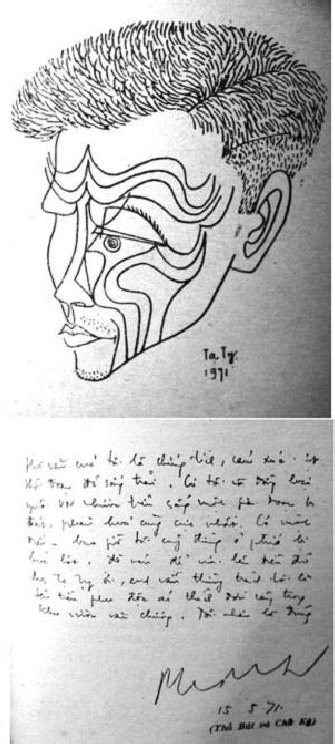

Tên: Đỗ Mạnh Tường. Bút hiệu: Thế Phong, Đinh Bạch Dân, Đường Bá Bổn. Sinh ngày: 10-7-1932 tại Nghĩa Lộ (Yên Bái). Viết văn từ năm 1952

Thế Phong và thủ bút.
Tác phẩm:
1. Truyện của người tình phụ, Đại Nam Văn Hiến tái bản, 1965
2. Khu rác ngoại thành, Trình Bày tái bản, 1966
3. Nửa đường đi xuống, Đời Mới tái bản, 1968
4. Thuỷ và T6, Đại Nam Văn Hiến tư bản, 1969
5. Nhà văn, tác phẩm và cuộc đời, Đại Ngã tái bản, 1970
6. Việt Nam Under Fire and Flames, thơ, Đại Nam Văn Hiến
7. South VN – The Baby in the Arms of the American Nurse, thơ, Đại Nam Văn Hiến
8. Thế Phong by Thế Phong, Tự sự kể, Đại Nam Văn Hiến
9. Asian Morning Western Music (With the Preface of Professor Lloyd Fernando), Đại Nam Văn Hiến, 1971
(và khoảng 30 tác phẩm Ronéotypé)
Đã cộng tác với: Đời Mới, Văn Nghệ Tập San, Văn Hoá Á Châu, Nguồn Sống Mới, Trình Bày, Tenggara (Mã Lai), v.v.
Chủ trương Nhà xuất bản Đại Nam Văn Hiến.
Thế Phong và cơn mê dục vọng
Le Moi est halssable
(Cái Tôi đáng ghét)
B. Pascal (1632-1662)
… Thuở nhỏ, Thế Phong rất oán giận bố vì hai chuyện, và cho rằng bố không thương mình bằng mẹ. Một lần bố sai đi mua thuốc phiện, đường xa, phải cưỡi ngựa băng qua dòng suối lớn đang mùa nước lũ, bị nước cuốn mất ngựa suýt chết. Khi về, bố chỉ hỏi thuốc phiện mà không hỏi đến sự nguy hiểm của mình. Một lần, muốn cho con học, ông đã nhốt con trên sàn gác, sai người cất thang, dưới chất đầy cành gai, khi nào học thuộc bài mới được xuống…
Trong khuôn khổ sinh hoạt văn nghệ miền Nam, Thế Phong nghênh ngang bước vào, mang theo giông gió làm đổ vỡ bao nhiêu thần tượng cùng với những hằn học, bất mãn trước xã hội.
Không giống các văn nhân khác, dùng trí năng soi tỏ con người đối chiếu với sự vật, từ đó, phóng hồn vào khung trời sáng tạo với đầy đủ quyền hành do nghệ thuật trao phó để hình thành tác phẩm. Thế Phong tìm riêng cho mình một tư thế sáng tạo bằng cách mang bản thân ra làm vật thí nghiệm và dùng người thân, bạn hữu, người tình, cuộc sống như những chất liệu để xây dựng Sơn Nam văn chương. Điều này làm buồn lòng nhiều người. Thế Phong đã bị dư luận anh em oán giận, người tình than trách và sự hiện diện của tác phẩm Thế Phong như những bản cáo trạng kết án tử hình thế hệ mình. Nhà văn biết rõ điều đó, nhưng mọi thứ trên đời, dù ân nghĩa, dù tình yêu, dù phản bội đối với Thế Phong cũng chỉ như những phương tiện thôi, cứu cánh là nghệ thuật. Vì tin tưởng thế, muốn như thế, nên những sự kiện được viết thành văn, nó nằm ở ngoài dự tưởng của lương tâm mỗi con người bình thường.
Trước bước đường tiến tới vinh quang, mỗi nghệ sĩ phải tuỳ tài, tuỳ trí để lựa chọn ngả nào thích hợp với khả năng, với ý hướng và cũng ít nguy hiểm nhất để tiến tới ước vọng, vì không một ai có thể đạt được danh vọng trong vài ngày, vài tháng. Nghệ thuật là một công trình, ở đấy, mỗi tài năng đều phải lần lượt kinh qua những cay đắng và gian khổ, để rồi cùng với thời gian mà trưởng thành hoặc tàn lụi đi như một tuyệt vọng vô danh.
Sự thực, cuộc đời Thế Phong đã trải qua quá nhiều cay đắng và hệ luỵ do hoàn cảnh đẩy tới với oán hận triền miên. Nhưng đáng lẽ những cay đắng đó chỉ được dùng cho riêng mình trong sáng tác, Thế Phong lại lôi kéo theo những số phận khác cùng gánh chịu để gây nên ngộ nhận. Nhà văn biết, nhưng bất cần, vì nghĩ rằng, bản chất đích danh của sự sống không nằm trong xã hội mà ở mỗi con người nghĩ về sự sống đó với những yếu tố cấu tạo nên nó. Thế Phong, một nhà văn đã dám nói thực, viết thực những gì mình nghĩ, dù cho sự nghĩ đó chỉ nhằm vào mục tiêu đã lựa chọn. Chính vì đã chọn lựa, nên Thế Phong chấp nhận cả tốt lẫn xấu để sử dụng nó với chiều hướng có lợi cho mình, cho văn nghiệp của mình là đủ. Trong nền văn chương thế giới, thiếu gì những tác giả viết về mình, về xã hội và thế hệ mình với những sự việc hiển nhiên vây chặt lấy mỗi số phận như Collette, Marcel Proust, v.v. nhưng các vị đó chỉ dùng những nhân vật chung quanh họ như bằng chứng điển hình cho một tầng lớp xã hội nào đó, chứ không chỉ đích danh, hơn nữa, các vai trò đã được văn-chương-hoá nên không làm phiền lòng người được nói đến. Độc giả cũng chỉ coi như xem cuốn tiểu thuyết với những tình tiết khúc mắc thuộc kỹ thuật dựng truyện mà không có mặc cảm đọc bản án kết tội.
Thế Phong không viết như vậy, nhà văn đi vào từng sự việc và thuật lại y nguyên từng sự việc, tuy ở đôi chỗ có thay tên đổi họ, hoặc nguỵ tạo bằng danh từ riêng, nhưng những người cùng sinh hoạt chung môi trường, đoán biết ngay nhân vật đó là ai. Bởi vậy, những người được nhắc đến trong tác phẩm của Thế Phong, phần lớn là vật hy sinh, hoặc biến thành những viên gạch lót đường cho người viết đi tới sự nghiệp. Chính vì nhìn rõ cương vị của mình trong cuộc sống, một cuộc sống khốn nạn, tù hãm, bị vây lút bởi hoàn cảnh bất lợi cho riêng mình, nên đi đâu, ở đâu, Thế Phong cũng tự gây nên những sự việc, dù thuộc đời sống hay tình cảm, không nằm trong kích thước cuộc sống thông thường.
Thế Phong, nhà văn bất mãn thường trực, bất mãn với mình, với người, với xã hội. Sinh ra đời trong bối cảnh thanh bình của miền Thượng du, suốt khoảng ấu thơ được nuông chiều trong tay mẹ hiền, cho đến khi vừa đỗ xong Tiểu học thì đất nước cũng bắt đầu rối loạn vì tình hình chính trị và quân sự. Nghĩa Lộ, quê mẹ của nhà văn, là căn cứ địa, là chiến khu của Việt Minh, như chiến khu Bắc Sơn thuở tiền khởi nghĩa. Mồng 9 tháng 3-1945 quân Pháp mất Đông Dương vào tay quân Nhật sau một đêm giao chiến, các toán quân Pháp đóng ở cao nguyên, một phần đã rút theo ngả Nghĩa Lộ qua biên giới Trung Hoa để chống Nhật. Việt Minh cũng chống Nhật nên các toán quân du kích hoạt động tích cực ở khu vực này cho đến ngày Pháp trở lại Việt Nam, và Nghĩa Lộ lại bị cai trị dưới sức mạnh của quân đội Pháp, mới ngày nào lếch thếch, quần áo tả tơi, ăn xin, chạy trốn đoàn quân của Thiên Hoàng. Người dân Nghĩa Lộ qua mấy lần thay đổi chế độ, tan nát cả sự nghiệp cũng như lòng tin tưởng và hy vọng!…
Tất cả những diễn tiến trên, được Thế Phong nói rõ trong phần đầu của tác phẩm tự thuật: Nửa đường đi xuống (ấn bản đầu in Ronéo, 1960, sách in năm 1968).
Nhân vật xưng Nguyên trong tác phẩm là tác giả. Thế Phong dùng danh từ đặc hữu này để thay ngôi thứ nhất. Nguyên, cậu bé có tình rất sớm, mới hơn 10 tuổi hễ trông thấy gái là mê, cái tật này làm khổ nhà văn suốt cuộc sống, còn làm luỵ bao nhiêu đàn bà, con gái nhẹ dạ! Hình ảnh, nào Hương, Trinh, Tiên, Nga, Hải ở lứa tuổi 12, 13, v.v. đều làm cậu bé mơ mộng, muốn chiếm đoạt. Thời gian qua mau, chinh chiến đã phá vỡ tất cả mơ mộng của tuổi thơ. Tây đi, Nhật đến, Việt Minh đánh, rồi Cách mạng tháng Tám bùng nổ trên mọi nẻo đường đất nước. Sự có mặt của đoàn quân Cách mạng tại Nghĩa Lộ với Hồng, Quân, Vũ và Trung đoàn trưởng Sắc.
Trung đoàn trưởng Sắc đóng đô ở nhà một goá phụ, sau này, khi rút lui để lại cho bà một đứa con. Anh Trung đoàn trưởng tuy đã có tuổi, sắc mặt lầm lì, nghiêm khắc nhưng vẫn không lột bỏ hết quá khứ tình dục bỏng cháy, vì Cộng sản cũng chỉ là người với tất cả thú tính của nó. Quân đội Cách mạng không giữ được Nghĩa Lộ lâu, đám tàn quân Pháp chạy qua Tàu bữa nọ, quay về với trận chiến ác liệt, buộc quân Cách mạng phải triệt thoái. Nguyên làm bí thư cho Sắc nhưng không rút cùng quân Cách mạng, lại theo gia đình tản cư sâu trong rừng núi. Rồi ông Giáo, bố Nguyên, bị nghi ngờ theo Tây, bị bắt mang đi đâu không biết. Mẹ Nguyên nhất định trở về Nghĩa Lộ, về lại căn nhà thân yêu của mình với đồn điền và của cải chôn giấu. Nguyên cũng về theo mẹ. Căn nhà xưa, nay quân Pháp đóng, nhờ Nguyên biết tiếng Pháp nên công việc thu xếp cũng xong. Viên Thiếu tá Pháp Chỉ huy trưởng, thấy Nguyên thông minh nên muốn xin cho Nguyên sang Pháp học, Nguyên là con một, nên bà cụ không chịu.
Louis, tên Pháp lai Thái, khi Pháp mất quyền, chạy theo quân Cách mạng, lúc nghe tin Pháp về, trốn theo quân Pháp, bây giờ được phục hồi cấp Thiếu uý, giữ chức vụ Trưởng đồn. Louis mời Nguyên giúp việc. Thoạt đầu Louis còn tử tế, sau cũng làm bậy, cho lệnh giết trâu bò của dân làng. Một buổi Louis đem quân ra đồng bắn trâu bò thì đồn bị tấn công. Nguyên chạy vào lô-cốt, một thương binh Pháp bảo Nguyên: "Anh bắn đi, tôi sợ!… Việt Minh nhiều lắm!…" Nguyên bắn thật. Nhờ khẩu trung liên đó mà đẩy lui quân địch. Nguyên được tuyên dương.
Đời Nguyên còn qua nhiều giai đoạn vui buồn ở Nghĩa Lộ. Trung uý Guilleminot về chỉ huy căn cứ, yêu quý Nguyên vô cùng. Ông ta giúp đỡ Nguyên chẳng những ở Nghĩa Lộ, còn ở Hà Nội sau này. Một hôm Nguyên nhận được lá thư của Sắc, người Trung đoàn trưởng Việt Minh – gửi với lời báo tin ông Giáo vẫn khoẻ mạnh và Sắc đã thu xếp cho Nguyên đi Mạc Tư Khoa học. Chính vì bức thư này mà "petit Adjudant" Nguyên suýt bị tù do sự tố cáo bởi thù oán của đội Hồ. Sở dĩ Hồ có được lá thư vì lấy trộm của Nguyên trong lần đi tắm suối. Hồ giữ thư đó để làm áp lực với gia đình Nguyên trong vấn đề hắn định hỏi Bích, chị Nguyên làm vợ, không được. Sau cũng vì một tối đánh phé với Nguyên, Hồ thua cay nên ức, trình lá thư cho Trưởng đồn. Chuyện đó được giải quyết bằng cách quân đội Pháp chỉ cho Nguyên nghỉ phép dài hạn.
Cuộc đời Nguyên từ đó rong chơi bạc bài, lấy tiền mua hàng của mẹ đánh thua hết, rồi vay nợ, ăn cắp tiền bỏ ống của đứa em họ, đánh đập tàn nhẫn em gái mỗi lần nó không vay được tiền.
Tất cả những kỷ niệm, dù vui tươi hay cay đắng, Thế Phong đều viết ra, viết rất chân tình không úp mở:
… Nguyên đợi Ny về, hăm hở hỏi:
"Có tiền không?"
"Không ạ, bác bảo…"
"Tại sao?"
"Bác bảo anh đến mà lấy".
"Sao?…"
"Bác bảo…"
Ny muốn kéo dài để tránh anh thúc trả lời và những cái tát đổ hào quang con ngươi. Không bao giờ Ny về không có tiền mà không bị anh đánh. Nguyên đánh em rất vũ phu. Tiếng khóc lịm đi cho đến bao giờ chị Cửu can thiệp, Nguyên mới thôi.
Trong quãng đời bỉ ổi và đau khổ đối với em gái, Nguyên không thể quên được! …
(Nửa đường đi xuống, trang 157)
Chắc Nguyên không bao giờ quên được, chẳng những đối với Ny qua từng trận đòn tàn bạo mà còn bao nhiêu chuyện khác, trong đó có nỗi đau khổ của người mẹ thương xót đứa con duy nhất với nhiều hy vọng về tương lai, nay nó như vậy! Những ngày dài nối tiếp đi qua khung trời Nghĩa Lộ. Nguyên vì thương mẹ, không đánh bạc nữa, bắt đầu làm lại cuộc đời trai trẻ của mình, bằng cách đốt rẫy làm ruộng. Nhưng có lẽ, định mệnh đã sắp đặt sẵn cho Nguyên những điều kiện để đi vào từng sự việc, dù may mắn hay rủi ro. Vì chuyện làm ruộng Nguyên gặp Quán, cô gái quê thuộc thôn Đỗng cách xa nhà Nguyên độ mươi cây số. Quán, con nhà thường dân, nghèo hèn nhưng trời phú cho sắc đẹp mặn mà với dáng điệu quý phái (?). Quán đã có chồng chưa cưới tên Hời (lính Partisan), một hôm đi hành quân lục soát bắt gặp Quán trong cót thóc rồi mê nàng, bắt buộc gia đình Quán phải gả cho hắn. Hời già và nghèo, nên hắn dự định giết chết những ai nhiều tiền của, để có phương tiện cưới vợ. Quán không yêu Hời, lẽ đương nhiên. Chuyện Nguyên gặp Quán là kết thúc một ước mơ và cũng để giải toả trong lòng niềm oán hận đời!…
Cuộc tình rất thơ mộng của đôi trẻ cứ men theo những lối mòn, trên bờ nương, bên rừng cỏ cháy, trong từng đêm dài.
… Những đêm tàn dần theo nhau, bao giờ đôi trẻ ấy cũng mong thế. Khi yên giấc, là lúc cơ hội yêu đương sống động…
(Nửa đường đi xuống, trang 176)
Câu chuyện này làm gia đình Nguyên rất đau khổ. Quán, con nhà nghèo lại có chồng dù chưa cưới. Nhưng tuổi trẻ Nguyên đâu cần biết cái đó, cứ nhắm mắt theo tình yêu dẫn lối. Nhưng cuối cùng, Nguyên vẫn phải xa Quán, vì sợ bị tù theo đơn thưa, cũng do thù oán. Nguyên buộc lòng phải rời Nghĩa Lộ. Thế Phong đã viết những dòng thực sống và cảm động khi bị giam ở lô-cốt một đêm.
… Bước xuống hầm mùi tanh hôi xông lên, khi thấy anh vào, một tù binh nhếch mép cười gượng rồi im lặng. Nguyên không để ý đến sự có mặt của người bạn xấu số kia. Nguyên còn lợi dụng những giây phút còn ánh sáng, nhìn qua lỗ hổng lô-cốt, tìm hình bóng Quán, Nguyên cắn răng như muốn phá tan tù ngục và sự có mặt của thép gai xích sắt, tường vôi. Vô hiệu, chẳng tìm thấy Quán mà bóng đêm ập xuống. Xuống quá nhanh và phũ phàng!
Muỗi bắt đầu dạo nhạc. Người bạn tù bảo Nguyên:
"Tôi là Hoàng Văn Định. Tối nay tôi bị chúng xử bắn. Tôi yêu nước và đã mang bom ba càng ném vào chúng. Nhưng anh ơi! Bao giờ tôi mới thấy lại mẹ già, vợ và con thơ tôi. Tôi quê ở Hà Đông, Tiểu đoàn 12, Trung đoàn 97.
… Anh làm sao mà gặp gia đình tôi, để nói rằng trong cuộc kháng chiến, tôi đã chết bên anh, trong một miền hẻo lánh, để sau này kháng chiến thành công, gia đình tôi khỏi phải mong đợi…"
(Nửa đường đi xuống, trang 182)
Sự thực, trong cuộc kháng chiến chống Pháp chẳng phải chỉ có một mình Hoàng Văn Định chịu cảnh tù tội, bị đem xử bắn mà còn rất nhiều tấm gương anh hùng vì hai chữ Việt Nam dám hy sinh hết không tiếc nuối. Trường hợp Định với lời than van, chỉ chứng tỏ được cái tình người chứ chưa biểu lộ được cái quyết tâm của mỗi con người quốc gia yêu nước vào những năm 1946 đến 1954.
Vì may mắn và cũng do bà mẹ, Nguyên đi Hà Nội học để tránh cái không khí nghẹt thở của Nghĩa Lộ. Nguyên đâu có ngờ, chuyến đi này là mãi mãi, không một lần trở lại thăm thôn cũ quê xưa. Ngồi trên máy bay Nguyên nhìn xuống phi trường để tìm hình ảnh Quán, người yêu, người đã cho mình những ân ái mặn nồng của tuổi thơ, người đã khắc sâu vào tâm khảm mình những kỷ niệm đến chết chẳng hề phai lạt. Trong khi đó, Quán đến muộn, nàng không kịp nắm chặt lấy hình hài Nguyên để tỏ bày đôi câu giã từ. Nàng đứng ngớ ngẩn ở sân bay như con chim nhỏ lạc đàn. Khi máy bay sắp cất cánh, Nguyên mới chợt nhận ra vóc dáng thân yêu:
… Cánh quạt bắt đầu quay. Cánh cửa đóng lại. Bây giờ Nguyên mới hoàn hồn nhìn lại. Nghĩa Lộ từ giã mình bằng một sự yên lặng cô đơn. Bỗng Nguyên giật mình. Người đàn bà kia là nàng. Phải, đúng là Quán. Nguyên dùng bàn tay đập vào cửa kính. Và càng mạnh, khiến người chiêu đãi viên đi lại hỏi. Nhưng anh không kịp trả lời. "Tại sao ông đập cửa kính?" Vẫn đập nữa, mãi sau họ bảo:
"Ông có quên gì, thì chúng tôi sẽ gửi về sau cho ông". Nguyên thờ thẫn. Quán bây giờ chỉ còn là một dấu đen nhỏ. Anh gục đầu xuống đôi cánh tay…
(Nửa đường đi xuống, trang 185)
Trên đây, những dòng cuối của phần đầu cuốn sách. Khung trời Nghĩa Lộ trở về sau, được Thế Phong nhắc đến như một kỷ niệm đan xen những vui buồn và giọt máu Nguyên để lại trong thân thể Quán cũng làm nhà văn băn khoăn không ít ở những trang nối tiếp.
Thế Phong vì còn trẻ và quá tự tin nên luôn luôn đề cao mình về trí thông minh và lòng can đảm ngay từ thuở nhỏ. Điều này có thể đúng, nhưng có lẽ, khi viết nhà văn quá chủ quan, hơn nữa, Thế Phong thực hiện cuốn sách vào năm gần 30 tuổi, nên chỉ viết theo sự chỉ dẫn của tiềm thức, do đó, thể văn hồi tưởng nếu có tác động đến tâm thức tác giả, cũng do sự tán tụng mình ở trong khuôn thức nào đấy để tự thoả mãn!
Nhưng phải xác nhận, qua những sự việc thuộc phần đầu cuốn Nửa đường đi xuống, Thế Phong phải dùng hết khả năng và sự lanh lẹ của mình để đối phó với nhiều trường hợp dù thuận, dù không. Từ một đứa bé được nuông chiều, bước sang cuộc đời đầy khốn khó, tác giả đã dùng trí năng để kinh qua được rất nhiều trở ngại, chỉ riêng vấn đề tình ái, tuy tuổi còn nhỏ mà đã biết đam mê như gã thanh niên trưởng thành, nhất là giai đoạn 1945, khi nếp sống xã hội Việt Nam nói chung, vẫn chưa có gì đáng khích lệ trong vấn đề luyến ái. Ngay cả đoạn nói về vai trò của Sắc – người Trung đoàn trưởng Việt Minh – qua sự phân tích tâm lý, với nhận xét về mặt tình cảm của nhân vật, làm những trang sách trở nên nghi vấn. Vì ở cái tuổi 13, 14 dù thông minh cách nào đi nữa, cũng chẳng thể đoán biết một cách minh bạch về hành động của người Cộng sản đã chiến đấu cho Đảng, vì Đảng, đã hy sinh tình nghĩa bạn bè, tình nghĩa gối chăn cho Cách mạng. Người đọc tin chắc phần này được viết ra với suy luận, sau hơn 10 năm ngẫm nghĩ, đã sống, đã từng trải qua nhiều vui buồn thế cuộc!
Phần II của cuốn Nửa đường đi xuống (hay quyển truyện thứ hai) mở đầu bằng lá thư gửi một nữ y tá, người yêu. Mỗi phần sách, một phần đời của tác giả. Vì là tự thuật, nên tất cả mọi sự việc đều được viết ra có lớp lang, tuần tự theo thời gian. Nội dung lá thư chứa chấp nhiều cay đắng, hờn hận. Nó là lời chào vĩnh biệt. Nó là cơn đau vò xé nội tâm người trong cuộc. Tình yêu, ôi tình yêu, đứng trước nó, con người trở nên hèn mọn và sẵn sàng chấp nhận khổ đau một cách tự hào!…
… Cách đây hai năm, anh đã viết cho em nhiều thư lắm. Nhưng chưa bao giờ gửi, mặc dù em cùng sống với anh trong một thành phố đang quen, cùng một bầu không khí lành lạnh buổi sáng, nóng bỏng càng tăng lúc non và già trưa. Hẳn là em ngạc nhiên, lẽ tất nhiên rồi, vì anh muốn đoạn tuyệt với quá vãng. Song anh làm sao có thể là một con người như bao xưa nữa tuyên bố trước mặt mọi người: Tôi lột xác và bỏ ngày qua, để nhìn rõ hiện tại, như thế là xây dựng cho ngày mai. Gần mười năm phục vụ, gần sáu năm thực tập cái lề lối, cái nếp sống bề ngoài thơn thớt nói cười để mà nham hiểm giết người không dao. Rồi anh chợt nhớ, nhớ quá lắm! Có những đêm, anh chắp tay vào má, trước ngọn đèn dầu ở xóm Chùa, bên bờ sông Tân Định, suy nghĩ mông lung, sau khi đã tự tử dần bằng những ly cà phê sánh đượm…
(Nửa đường đi xuống, trang 189-190)
Qua những dòng thư, người đọc đoán biết tâm trạng của tác giả. Cuộc đời đã quất những chiếc roi da ngang mặt, làm nổi hằn từng đau đớn qua chứng tích văn chương. Tác giả đã nói thực cho người yêu biết đừng tin tưởng vào bề ngoài mà xét đoán cái phong lưu bên trong, vì bề ngoài chỉ là chiếc mề-đay giả đấy thôi. Cả hai mặt đều khác sẵn từng nét xấu xa! Cuộc đời đã dạy cho Thế Phong nhiều bài học, nhưng không bao giờ nhà văn oán trách sự xấu nếu có đến với mình và cả sự tốt của người đời, cũng chỉ để giúp cho tác giả biết đứng trên hai thứ đó mà nhận diện cuộc sống đích danh.
Tác giả cũng chẳng cần che đậy, giấu giếm sự nghèo túng. Bạn mời đi ăn cưới, ăn mặc thật "luých", cúc manchette hình tareau đẹp bậc nhất của Paris mà thiếu 5 đồng tiền taxi phải nhờ chú rể hỏi vay một, trong những cô gái có mặt ở tiệc cưới. Đi từ lá thư vào truyện không cần qua đoạn chuyển tiếp thông thường của kỹ thuật hành văn, Thế Phong đưa được người đọc trở lui quá khứ, trở về khung trời Hà Nội, khi Nguyên vừa góp mặt, sau một chuyến bay. Từ đó, Nguyên ôm Hà Nội vào lòng với đam mê và tội lỗi.
Đến đâu, ở đâu, bóng dáng tình yêu cũng như bầy ma quái quấn riết lấy thân phận Nguyên để làm khuất chìm mọi ước vọng khác. Nguyên không ở đâu yên chỗ vì tính tình bừa bãi, phóng túng không chịu ép mình dưới khuôn thức nào của nếp sốn, nên sự đi, ở, đói, khát là những gần gũi nhất, trong một đời sống đã được điểm danh. Nhà ông Đội, một gia đình phong kiến rởm với kẻ hầu người hạ, với sự khinh bạc trong cách xưng hô làm Nguyên hờn giận, nên chỉ là những ngày tạm bợ. Rồi đến quán Mai Hương, vừa ở trọ vừa làm bồi bàn nhưng lòng vẫn nhớ Kiều, người bạn gái Tàu lai quen từ khi còn ở Nghĩa Lộ. Mấy tháng sau lại vào ở ký túc xá Phan Đình Phùng, phố hàng Đẫy, rồi lại tìm Kiều với mối tình dang dở, nhưng nàng đã lấy chồng Pháp để cứu gia đình lâm nạn. U hoài bắt đầu đến và Nguyên xin gió lạnh ở đâu, hãy về gác trọ thật nhiều để làm bạn với cô đơn!
Nguyên đi học, nổi tiếng là hy sinh quấy nghịch đã mấy lần suýt bị đuổi, tuy có khiếu về sinh ngữ. Tuổi học sinh vốn vô tư, hồn nhiên, nhưng vì vào đời quá sớm nên Nguyên đã có những nhận định và phong cách của một tráng niên. Trong mấy năm học, thi không bao giờ đậu vì ngoài môn sinh ngữ, môn nào cũng bết. Hình ảnh Thương, người nữ sinh cùng trường đã làm đẹp tuổi niên thiếu bằng những ước mơ hoa bướm. Một niên khoá qua đi rất nhanh.
Một buổi, người cô ruột của Nguyên đến ký túc xá bảo Nguyên về nhà ở. Nguyên mừng quá vì đang lo Nghĩa Lộ mất về quân kháng chiến sẽ không có tiền theo học, may gặp người cô giàu, thì dù cho Nghĩa Lộ có tan nát vì chiến trận, Nguyên cũng chẳng cần. Nhưng bài học đầu tiên đến với Nguyên là hành động của bà cô ruột, thải một lô quần áo cũ của chồng cho cháu. Nguyên bị chạm tự ái cho mình là con nhà giàu, mặc hàng Dormeuil đi học, đâu thèm mặc thừa. Giữa lúc cần tiền, một phong thư và chiếc "măng-đa" từ Nghĩa Lộ báo tin Quán, cô gái quê xứ Thái, đã sinh con gái. Trong khi đó mối tình cô nữ sinh tên Thương và Nguyên vẫn đi đều nhịp. Cách đó ít lâu, nhận được tin mẹ ốm nặng, Nguyên cũng không trở lên Nghĩa Lộ được vì mặt trận Thu Đông đang dìm cả vùng rừng núi vào biển lửa. Người mẹ rất mực thương chiều con, không một lần nhìn lại mặt Nguyên, từ buổi tiễn đưa đến lúc nhắm mắt lìa đời. Cả người cha bị bắt đi mất tích, sống chết ngày nào cũng chẳng ai hay biết!…
Nguyên bắt đầu viết văn. Từ đây, những đêm dài… Một nhận xét, Thế Phong quá tham lam trong vấn đề chọn lựa sự kiện đưa vào tác phẩm. Có nhiều việc thừa, hoặc không mấy cần thiết cho kỹ thuật dựng truyện, vẫn được viết tới, làm tâm trí người đọc bị phân tán, không gây nên tác động mãnh liệt vào một chủ điểm nào đó, được coi như chính yếu. Nửa đường đi xuống giống cái cây quá nhiều lá, đứng nhìn, người ta chỉ thấy một màu xanh nặng nề bao phủ mà không nom rõ cái "thế" vững chãi của thân cây với những nhánh, cành đang vươn cao sức sống. Có lẽ, vì nói tới mình, nên tất cả những gì "thuộc về mình" khó lòng gỡ bỏ, dù cho vì nó, tác phẩm có mất đi một phần hiệu năng truyền cảm. Chủ quan bao giờ cũng nguy hiểm, nhất là đối với văn chương, chúng ta không thể bắt chước G. Duhamel với ý nghĩ thầm kín: ôm ấp những cái gì thuộc giai cấp mình, chung quanh mình mà thôi.
Tội lỗi và tội lỗi, ở đâu, Nguyên cũng tạo ra cho mình chiếc "vực thẳm của Pascal". Mỗi lần phạm tội, Nguyên đều tìm nguyên cớ để khoả lấp, như trường hợp với Bảy, cô cháu họ của ông chú rể:
… Ở Hà Nội, những chiếc xe bọ hung màu xám chạy qua phố. Trên xe là những bộ mặt sát khí của các chú lính Pháp. Nguyên cảm thấy rằng sinh mạng con người chỉ là sợi tơ nhện chăng vào đêm giông tố. Nguyên thèm khát những bộ ngực nở nang…
Cái gì đến phải đến, Nguyên đã bị dục tình quật ngã, rồi Bảy mang thai sau hơn một trăm lần "ghi sổ". Chuyện này lúc đầu mọi người đều nghi cho chồng cô Thảo vô luân, đã ăn nằm với cháu gái. Nguyên càng tỏ ra mình vô can trước dư luận, nhưng sau mọi người đều biết là Nguyên. Bảy phải bỏ nhà ra đi với cái thai hơn 7 tháng. Nguyên đưa Bảy số tiền nhỏ còn lại, để nàng chi dụng, từ đó là hết. Đau thay thân phận đàn bà!…
Nguyên vừa đi học vừa tập viết văn, gửi đăng ở các nhật báo. Cái sự nghiệp văn học, Nguyên thường nhìn qua vóc dáng Nguyễn Công Hoan, Lê Văn Trương, Tô Hoài, v.v. còn xa lắm! Nguyên ở nhà bà cô cũng chẳng yên ấm gì. Vì không chịu được nếp sống của Nguyên, nên hai cô cháu gây gổ. Bà cô mắng rủa và đánh Nguyên. Tuổi trẻ không dằn được, Nguyên đấm lại bà cô sưng vù mắt. Sau đó, Nguyên bắt đầu lang thang với câu thề: Không bao giờ mình trở lại cái nhà này nữa.
Nguyên đến ở nhờ nhà bạn miệt chùa Vua. Buổi tối đang đánh phé với 3 bạn khác, có vụ Cảnh sát xét nhà. Lẽ dĩ nhiên, Nguyên không có tên trong sổ gia đình, phải về nằm bót. Khung cảnh cuộc thẩm vấn, được Thế Phong viết lại vô cùng xác thực, đã nói lên cái không khí nghẹn thở của Hà Nội, trong thời gian Pháp tạm chiến thành phố:
… Trưởng ban Điều tra chững chạc hỏi:
"Tên cậu là gì?"
"Thưa ông, Tạ Mạnh Nguyên".
"Làm báo?"
"Vâng".
Một lát sau, hình như hiểu ra điều gì, Trưởng ban "rờ-sẹt" gọi một thanh niên trẻ lại:
"Xem sổ có tên này không?"
Nguyên mừng thầm. Đến khi ông Trưởng ban quay phắt lại gọi:
“Hoàng ơi, affaire đây rồi. Nhà báo, c’est lui." Nguyên bắt đầu hơi lo, nhưng chưa biết chuyện gì. Nhớ lại lúc gần tảng sáng, anh nhìn sang khe cửa bên kia. Nhân viên điều tra thay phiên nhau đánh đập, đàn bà có, đàn ông có, choai choai có… Những tiếng khóc thét lên, im bặt tiếng van lạy như tế sao: Con đau quá!… văng vẳng trong tiềm thức anh.
"Tên mày là gì?"
"…"
"Mày buôn lậu Aspirine, Quinine, Streptomycine đem đâu? Tiếp tế cho Việt Minh, khai đi, đúng rồi, lại Quinines jaunes…"
"Con lạy quan, con trót dại buôn lấy tiền nuôi gia đình…"
"Lớn có thể đẻ con hàng mấy đứa, còn trót dại… Thằng gì… đâu, đánh cho nó khai. Allez…"
"Dạ…"
"Này gia đình này, không khai này, này không khai này, đ.m. chúng mày. Ông đánh cho bằng chết, có chửa này, thì… thời ra con này… Kh…ai…k…h…a…i hay không?"
Tiếng người đàn bà ban nãy, bây giờ chỉ còn giãy giụa vang từ trong căn phòng điều tra ra. Nguyên nhìn Hiển, cùng thấy cảnh loài người hành hạ lẫn nhau. Họ không nói, nhưng cả hai biết rằng, người đàn bà có đôi mắt đẹp lúc nãy, chỉ còn là một thân xác lõa thể bị dày vò. Hiến chương Liên Hiệp Quốc! Hiến chương Liên Hiệp Quốc bảo vệ nhân quyền…
"Đánh cho bỏ mẹ nó đi", một người ra lệnh, "dí điện vào "số ta" nó!"
"Trời ơi! Con lạy quan, con chết, chết mất…"
"Chết đâu dễ thế, khai đi, nhanh lên quan tha, Marie hay Jacqueline, Ngọc, Tuyết, Nhung ai là Trưởng ban địch vận của các con. Khai đi… quan tha, ngoan lên nào. Má đỏ thế kia, da trắng thế kia, hoài của… khai để mà sống chứ? Khai đi…"
"Con chết mất, xin quan chớ… hại đời con là con gái… con khai, con khai, quan tha con… trời ơi… trời ơi!"
(Nửa đường đi xuống, trang 267-268)
Đoạn văn đã vẽ lại trước mắt người đọc một pha tra tấn thường xảy ra ở bất cứ quận Cảnh sát nào dưới thời Pháp chiếm lại Hà Nội, sau khi đã đẩy lui Trung đoàn Thủ Đô qua bên kia bờ Hồng Hà và đi xa nữa!…
Nguyên đã thấy chán nghề viết báo, có ý định vô Sài Gòn làm cuộc phiêu lưu. Nguyên xuống Hải Phòng, lên tàu Ville de Sài Gòn vào Nam với số tiền do mưu mẹo của Hiển người bạn tốt. Vào Nam, Nguyên không quen ai, ngoài hành lý tuỳ thân và đôi lời gửi gấm của bạn bè, với lá thiếp của Minh (nhà văn Nguyễn Minh Lang) giới thiệu người bạn làm báo ở Sài Gòn.
Trong suốt phần II của Nửa đường đi xuống, sự thật cũng chẳng có dữ kiện nào đặc biệt để mà nói, ngoài chuyện quấy phá, nghịch ngợm của tuổi trẻ, với vài lỗi lầm nặng nhẹ về dục vọng. Nhưng vì tác giả muốn trình bày sự diễn tiến của một đời người dấn thân vào trong văn chương, với những mốc vui buồn của nó, một cách trung thực, nên sự việc được nói tới, viết ra, đều ở ngoài văn chương. Phải qua đến phần III (quyển truyện thứ ba), Thế Phong mới thực sự đi vào môi trường dự định. Từng khuôn mặt anh em, bạn bè, người tình đã mất đi vĩnh viễn hay còn sống cùng kích thước không gian Sài Gòn, đều được vẽ lại với những hận thù và tiếc thương đằm thắm. Sóng gió bắt đầu thổi từng cơn giận dữ.
Những ngày đầu ở miền Nam trôi đi trong khốn khó. Đêm khách sạn cô đơn và lo ngại ngày mai, đến nỗi từ chối cả đàn bà mời vui. Nơi đây Nguyên gặp Hồ Hán Sơn, người chuyên viết lý thuyết Cách mạng, sau cũng vì Cách mạng, chết tối tăm!… Rồi cuộc đời đẩy đưa, vì có viết mấy cuốn sách về chính trị, Nguyên được giới thiệu để giữ chức vụ Ủy viên Báo chí kiêm Bí thư của Tổng trưởng Thông tin Phạm Xuân Thái. Nhưng miếng đỉnh chung này cũng chẳng hưởng được bao lâu. Sau câu chuyện xích mích, Nguyên xin thôi, để sau này phải thốt lên lời oán trách gay gắt, khi bị Phạm Tổng Trưởng từ chối không cho mượn tiền:
… Thuê nhà được hơn một tháng, Nguyên bắt đầu thất nghiệp. Chính anh tự bỏ việc làm. Nguyên biết ngày mai mình chẳng còn gì để bấu víu, nhưng anh đành bỏ. Ban đầu anh còn tiền ăn, dần dần không xoay sở vào đâu được, anh đến nhà một hoạ sĩ ăn nhờ. Tân ngạc nhiên khi thấy bạn không còn bút Parker treo ở túi áo như mọi bận:
"Sao bút đâu? Bán rồi sao?"
"Tất nhiên. Nếu tao không cầm quần áo toàn diện, bút máy, đồng hồ, không có tiền thuê nhà. Tao vay Phạm Tổng Trưởng, nhưng lão ta kêu không có. Chúng nó làm chính trị chỉ cần mình khi chúng cần. Nên kinh nghiệm dạy cho biết, khi chúng vời mình đến, phải cắt cổ chúng mà lấy tiền. Nếu không nắm cơ hội ấy, đừng có hòng moi tiền được của chúng…"
(Nửa đường đi xuống, trang 305-306)
Câu chuyện túng thiếu, chuyện thường xuyên đối với hầu hết những người làm văn nghệ, nhưng sự túng thiếu đối với Nguyên, một phần do tính hào phóng, lúc có tiền ăn chơi cho đã, ngày mai xét sau, lúc xét được, đã muộn! Biết bao nhiêu lần lỡ đà, quá trớn về tiền bạc cũng như tình ái, chẳng lần nào giúp cho Nguyên được mảy may kinh nghiệm để vượt thoát. Trên thực tế, Nguyên có thể kiếm ra tiền bằng nhiều cách, khi làm Ủy viên Báo chí, nhưng tuổi trẻ, còn nhìn đời qua lăng kính lý tưởng, Nguyên đã để lỡ, chắc không bao giờ tìm thấy lại cơ hội đó nữa!
Cái nghề viết văn, có gì đâu mà nhiều người ham mê vì nó, chịu khổ cực cả một đời. Có lẽ, nó là cái nghiệp! Sách viết xong mang bán, đi rạc cẳng, không chắc đã bán nổi, dù bán với giá tiền chết đói:
… Bằng hẹn với anh đã nhiều lần lắm. Không còn xe đạp anh đi bộ vào Chợ Quán. Nhưng phải đi làm sao cho đỡ mệt, đầu tiên anh đi bộ đến nhà Tấn, hy vọng có tiền uống nước mía. Tấn đi vắng, anh nhìn con đường dài rồi trẩy bộ. Đến nơi Bằng lại lỡ hẹn với anh, mặc dầu cuốn sách in được mấy chục trang. Mỏi mắt đợi, ông quản lý của nhà xuất bản thương hại bảo:
"Tôi chưa thấy ai chịu khó hơn anh!"
Mười lần đến nhà xuất bản là mười lần không gặp. Đừng buồn, cố rán thì sau này sẽ nổi tiếng, đỡ cực hơn!
Ông ta đưa cho Nguyên mười đồng, biết rằng Nguyên hết nhẵn tiền. Trở lại nhà bạn, mong đúng bữa, với bát cơm nóng ấm bụng vào buổi chiều. Nguyên nghĩ đến mùi thơm phức của cơm bốc lên, quả là khoan khoái, thèm muốn. Nguyên nhịn đói là thường. Nhiều buổi hết tiền, anh nằm ngủ hay cựa mình để nhớ đến mùi thơm xưa kia, ở tửu quán xa hoa. Ngày ở xóm Chùa, Nguyên đã không chỉ nhờ những bà hàng xôi cho chịu mỗi sáng, mà còn nhờ bà bánh chưng buổi chiều. Lỡ hôm nào, họ đau ốm hay không qua đây, Nguyên chờ đói…
(Nửa đường đi xuống, trang 308)
Cứ như thế, nhà văn kéo dài cuộc sống trong khốn quẫn triền miên hỏi làm sao không căm giận cuộc đời? Tác phẩm bán đắt, bán rẻ quanh quẩn tiêu cũng hết, trong khi đó, vẫn phải ăn, phải thuê nhà, phải tiêu một vạn thứ linh tinh, làm gì còn tinh thần mà ca tụng cuộc sống.
Trích Nhật ký của Nguyên, tháng 1 đến 12-1957:
… Lại hết tiền rồi. Bắt đầu chịu tiền cơm. Chưa biết ngày mai phiêu diêu rồi định đoạt cuộc sống ra sao?
…
Chị chủ nhà giục tiền quá. Ba tháng rồi. Xuống nhà bạn xoay tiền không ra. Anh ta đưa mình lên quán Văn Sửu, định giao cho mình trông nom một loại sách văn nghệ, in nửa tháng một kỳ. Cuốn đầu tiên là của mình. Rồi công việc không đi đến đâu, lại ngưng. Trong khi ấy nợ chủ quán hai nghìn.
…
Thằng Vân đưa về nhà nó, nuôi mình gần một tháng viết tiếp cuốn sách. Và sửa soạn ra thăm bà cô để vay tiền trả nợ. Văn xem bói bài Tây cho mình, bảo chuyến đi xa có tiền. Mình chẳng tin bao giờ, sao lần này mình lại hy vọng có tiền như quẻ dặn là ở bà cô chăng? Nhân tiện ra thăm anh bạn văn nghệ gửi thư cho mình, ngày phát hành một cuốn sách nhỏ. Anh ta mời nhà văn ra chơi ăn bí-tết, vì trong thư anh viết theo giọng châm biếm: ngày xưa Vũ Trọng Phụng khi chết, than không có bí-tết. Tôi rất kính trọng và xin nói thật vậy. Lời của anh ở cuối thư.
Người bạn văn nghệ quý tài Nguyên mời ra ăn bí-tết, ai ngờ lại bị Nguyên lấy mất số tiền mười ngàn đồng do nhà triệu phú Trần Hoài dành dụm. Sau, trong cuốn Thế Phong, tác phẩm và cuộc đời, tác giả có viết lại lần nữa việc này.
Ăn cắp, hai chữ đó xấu lắm, một người biết tự trọng và có chút lương tâm, dù đói khổ cách mấy cũng không làm. Thế Phong đã làm vì quá túng thiếu, nợ nần, nào tiền nhà, tiền cơm, tiền cà phê, thuốc lá quá nhiều, đến nỗi người chồng nghi vợ có tình với Nguyên nên không đòi. Nguyên cần phải sống để viết, để hoàn thành dự ước: trở thành nhà văn nổi tiếng. Việc làm bất chính nay đã giải thoát cho Nguyên một thời gian ngắn trong vấn đề sống, nhưng những dằn vặt, lo sợ tù tội vẫn hằng đêm lởn vởn trong tâm trí và làm khổ Nguyên không ít.
Những người xung quanh đối với Nguyên không hoàn toàn xấu cả, còn có chị Năm Hưởng vẫn thỉnh thoảng phần cho Nguyên những thức ăn như xôi chè hoặc quả chuối. Chị Năm Hưởng, số phần lận đận qua mấy cầu chồng con. Những ý nghĩ đen tối về xác thịt bắt đầu nhen nhúm để đốt cháy lương tri Nguyên trong thèm khát dục tình. Nguyên thức khuya viết, những dòng chữ nào xuống mặt giấy vì đuôi con mắt và nụ cười của chị Năm như mời mọc ân ái. Chính vì muốn xâm chiếm chị Năm, Nguyên đã để ý cách thức mở cửa sao cho êm và chui vào mùng chị bằng cách nào? Đêm khuya, chờ cho anh chị chủ nhà ngũ kỹ, Nguyên thi hành dự định.
Mọi việc được giải quyết một cách suông sẻ. Sáng hôm sau, hàng xóm nghe tiếng chị Năm Hưởng nói như phân bua với chị Hai Nụ, chủ nhà Nguyên: Con mẹ ngủ nhờ đêm qua lười như hủi, ai lại giận chồng con mà nằm lì ở nhà mình. Nguyên cười trong chăn. Nhưng rồi, khốn khổ thay người đàn bà ấy, một mầm sống đã hình thành trong bụng, để rồi sau này, khi sinh nở, chỉ nhận được một hộp Hépatrol, thuốc bổ máu, giá hơn trăm bạc!
Thế Phong đã gieo vào cuộc đời vài mầm sống với dăm người đàn bà gặp gỡ trong các hoàn cảnh đặc biệt. Những đứa trẻ không may này, nếu trời để làm người lớn lên, không biết chúng có đọc lời nhắn trong cuốn sách để tìm thấy bố? Chúng sẽ nghĩ gì về trường hợp khốn nạn, ở đó, chúng góp mặt! Nguyên không hoàn toàn bất nhẫn đối với đàn bà cả đâu, Nguyên đã dám từ chối tình yêu cô Năm, người đàn bà cùng xóm gửi tặng. Cô Năm cũng lỡ dở đường chồng con, chỉ vì nghĩ đến chị Năm Hưởng với cái bào thai, đã mấy lần dùng thuốc phá không được, hối hận và hối hận!…
Đời sống cứ thắt dần từng nút, từng nút như sợi dây oan nghiệt đang xiết từ từ vào cuống họng kẻ chán đời. Nguyên đã cố gắng đến cùng, vẫn không giải quyết được vấn đề cơm áo. Cuốn sổ ghi nợ cứ chồng chất những con số nặng nề làm Nguyên muốn gục xuống. Một chiều, chị Hai Nụ nói:
"Cậu Nguyên, chiều hôm nay, không thể nào nấu cơm cho cậu ăn nữa. Chị đưa tay lên lau mắt. Anh Hai tôi nói thế này, có khổ tôi không? Bảo tôi với cậu có tình ý với nhau, tôi sợ không đòi cậu!…"
(Nửa đường đi xuống, trang 349)
Qua phần IV của Nửa đường đi xuống (quyển truyện thứ tư), Nguyên đành rời bỏ Sài Gòn đi Rạch Giá để kiếm sống bằng nghề dạy học. Cũng chẳng được bao lâu, lại trở cánh quay về thành phố, như con thiêu thân không xa rời được ánh sáng. Những kỷ niệm đau đớn hay oán hận đều được nhắc nhở minh bạch, kể cả chuyện bị bệnh phong tình do cô gái làng chơi gửi tặng. Nhiều người cho rằng Thế Phong "cynique", nhưng đó là bản chất của Thế Phong, nhà văn không nguỵ tạo, nếu khác thế, chẳng còn Thế Phong hôm nay.
Những ngày vô định tiếp nối kéo lê trong phiêu bạt, tối nằm ngủ sợ ngày mai chóng sáng, phải nhìn thấy thực chất cuộc đời với những khuôn mặt chủ nợ.
Nguyên bứt đi khỏi xóm Chùa bằng cách bỏ trốn, để lại tất cả sách vở và đồ nhật dụng. Các tập bản thảo đã được lén lút mang dần ra khỏi nhà từ mấy bữa trước. Một cuộc sống tay ba: Tô, Thảo, Nguyên: những người trai bị đời hất hủi, được tổ chức trong một khuôn khổ không mấy khích lệ, vì luôn luôn họ bị ám ảnh, bị mặc cảm qua ý kiến của Tô:
"Mày bảo tao không chán chường sao được. Khi tuổi thanh niên của bọn mình đã chết một cách bất đắc dĩ. Chỉ còn sa ngã vào tình yêu, dù truỵ lạc, dù chà đạp lên luân lý!…"
(Nửa đường đi xuống, trang 373)
Vì vững tin như vậy, nên họ tạo một lối sống riêng và Nguyên có leo qua vách để làm tình với mụ me Tây về già trong đêm nào đó, cũng là chuyện thường. Khổ thay, người đàn bà đã lọc lõi ở đời về đường tình ái, vẫn bị thằng con trai đáng tuổi em út mình lừa dối!
Trong hoàn cảnh khốn khó như thế, những người ở xa Nguyên, không nhìn thấy sự thực, nên vẫn mơ mộng trong từng cánh thư gửi từ Hương Cảng. Nói rằng yêu, chưa đúng vì chẳng có lời yêu đương nào được ghi nhận, nói không yêu cũng sai, vì nội dung lá thư có hàm chứa những ý tình. Thế Phong đã viết rõ chuyện này trong cuốn tự truyện: Thế Phong, tác phẩm và cuộc đời (Đại Ngã tái bản, 1970) với những ray rứt, đứt nuối ở mỗi dòng, mỗi chữ.
Trong suốt phần IV của tác phẩm, dành để nói về mối tình trên với vài hình bóng con gái khác cùng những dang dở.
Phần V, cũng là phần chót của Nửa đường đi xuống, được viết với tâm trạng vô cùng bi đát. Tình yêu cũng chỉ là hư ảnh. Nghệ thuật còn xa vòi vọi, chân trời vẫn nặng trĩu mây mù. Cuộc sống nối tiếp trong thiếu thốn trường kỳ. Với tình yêu, không phải bao giờ Nguyên cũng là kẻ chiến thắng, dù rằng, có người con gái đã viết cho nhà văn, những dòng chữ đằm thắm, chân tình:
"Ông Nguyên ơi! Ông phải nhớ rằng, giả thử xã hội này tất cả đều ruồng bỏ ông, ông hãy tự hào sung sướng có một người bao giờ cũng tìm ông…"
(Nửa đường đi xuống, trang 490)
Nhưng đau thay, cũng có giọng khinh bạc đến với Nguyên, qua câu chuyện được thuật lại cùng trong thư đó:
"…
"Thưa cô, tôi trông cô quen lắm".
"Thưa cô, có phải cô là cô Lam không ạ?"
"Thưa cô, cô có nhận được báo của tôi gửi tặng chưa ạ?"
"Thưa cô, cô còn nhớ tôi không?"
"Thưa ông, tôi không còn nhớ ông là ai, tôi có quen một anh quét đường cùng ở xóm Chùa với tôi, mỗi lần tôi đi học về anh ta hay đón. Nhưng lâu nay, tôi không gặp nữa, vì xóm Chùa không còn rác nên anh ta thất nghiệp…"
(Nửa đường đi xuống, trang 491)
Hình ảnh những cái rủi luôn luôn chờ đợi, rình rập xung quanh Nguyên, đợi dịp thuận tiện xông ra đẩy Nguyên xuống bùn đen. Đã không tiền, không nơi ở, lại còn gặp nhiều điều không như ý, nên có lời nào viết về bạn hữu – trừ một vài người vì quá tốt hay may mắn – đều bị tác giả ném vào mặt những lời sỗ sàng, tàn bạo. Mỗi khuôn mặt trong trang sách đều mang theo vì vết chém của Nguyên. Nào thi sĩ Đạm, nào T.T. Hoàng, v.v. trong đoạn kết của cuốn sách với những cái tát cuối cùng và những lời sỉ nhục quá đáng! Thế Phong đã dùng hết sức mình để công phá lần chót, trả thù đời! Khi viết lại thân phận qua những gian truân, oán hận, Thế Phong không dằn được cái "váng nổi của ý thức" khi còn trẻ nên đã nói hết, viết hết những gì chứa chấp trong tâm tư, mặc kệ hậu quả. Câu mà thi sĩ Đạm nói ra: "Tất cả đều sợ anh" trong buổi tối Nguyên đánh Hoàng vì đã nói xấu mình khi vắng mặt, là như thế đó!
Cuốn sách tạm ngưng với vài lời cám ơn bạn bề, dù tốt dù phản phúc, nhưng họ đã cho nhà văn cái vốn sống để hoàn thành sự nghiệp.
Thế Phong luôn luôn khát vọng và mơ ước mình sẽ trở thành một Maxime Gorki Việt Nam [Maxime Gorki (1968-1936), sinh tại Nijni-Novgorod, một thành phố nằm ở ngã ba sông Volga và Oka. Thành phố có bến tàu lớn, cũng là trung tâm kỹ nghệ thép, xe hơi và cơ xưởng lọc dầu. Những tác phẩm nổi tiếng hoàn cầu như Tuổi thơ ấu của tôi (Ma vie d’enfant), Những kẻ lang thang (Les vagabonds), Người mẹ (La mère), v.v. đều được phiên dịch ra nhiều thứ tiếng và nhà nước miền Bắc cũng đã dịch ra Việt ngữ]. Thân thế và cuộc đời của Gorki cũng đã gánh chịu vô vàn tủi nhục, hận thù giai cấp tư bản, phong kiến, nên ông dấn thân vào Cách mạng Vô sản, dùng văn chương để trình bày cái xấu xa của xã hội thoái hoá, bóc lột, đề cao những tấm lòng vàng trong manh áo rách. Gorki đã khích động căm thù và dương danh vai trò vô sản trong mọi tác phẩm. Ông cũng đóng góp rất nhiều cho cuộc Cách mạng Nga tháng 10-1917. Do đó, ông được Nhà nước Liên Xô tôn xưng là đại anh hùng văn nghệ vô sản. Hoàn cảnh Việt Nam khác, dĩ nhiên, ước mơ lại càng khác nữa!
Thế Phong, tác phẩm và cuộc đời là sự nối tiếp những trang đời của tác giả. Ở Nửa đường đi xuống, Thế Phong còn nguỵ tạo danh tính các nhân vật được đề cập tới, nhưng ở cuốn Thế Phong, tác phẩm và cuộc đời, nhà văn đã cho người đọc biết tên thật của mỗi vai trò. Có nhiều chuyện được nhắc lại trong Nửa đường đi xuống với nhiều chi tiết hơn, những chi tiết nhức nhối làm chết sững lòng người.
Người con gái làm thơ: Cao Mỵ Nhân, đã cho Thế Phong nguồn đam mê tình ái và làm khổ nhà văn không ít trong suy nghĩ. Cuộc tình đằng đẵng, có lẽ sâu đậm nhất, sau mối tình vô vọng với nữ sĩ Linh Bảo. Tất cả nguồn cảm hứng sáng tạo trong thời gian này dành cho Cao Mỵ Nhân. Cuộc sống của Thế Phong vẫn chưa tìm thấy chân trời. Nhà xuất bản Đại Nam Văn Hiến in ronéo, lấy số kiểm duyệt mà vẫn ra đời với nợ nần và thiếu thốn. Trong khi đó sách bán rất chạy dù in lèm nhèm vì kỹ thuật ấn loát kém.
Vừa lo sống, vừa lo công việc nghệ thuật, vừa lo yêu, lúc nào ngần ấy thứ cũng đeo đẳng vào số phận nhà văn để hành hạ. Anh em, người này đi, người khác đến, cả những khuôn mặt đàn bà cũng vậy, như nàng Oanh – người tình cũ, gặp lại ở một trường hợp đặc biệt. Oanh đã tự tử không chết, bỏ chồng. Oanh đòi làm lại cuộc đời với Thế Phong, trong khi đó tình yêu với Cao Mỵ Nhân đang nồng nàn. Nhưng Thế Phong vẫn cùng Oanh đi Vũng Tàu, rồi những trận tình làm Oanh mang bầu. Nhà văn trốn tránh trách nhiệm bằng cách đổi chỗ ở. Đến Tết gặp nhau, Thế Phong đã chán, xô nàng xuống đường!…
Thế Phong viết lại rất lạnh lùng, tàn nhẫn. Mỗi dữ kiện được nhắc tới bao giờ cũng gói ghém trọn vẹn hai chữ: thù hận, không phải với cá nhân mà với cuộc đời. Thế Phong mê mải làm việc, có thể ngồi cả tháng trước máy chữ, đánh bản thảo trên giấy sáp để in ronéo. Sự thực, trong dòng sống, Thế Phong cũng có một chuyện tình chua xót với một người đàn bà goá gặp gỡ giữa đường. Người con gái này đã có con gái lớn, và hết lòng chung thuỷ với người chết, nhưng đốm lửa nên duyên, để rồi ân hận đến khi nhắm mắt! Trong đêm vắng, Thế Phong muốn thử xem người đàn bà bốn mươi, đáng tuổi chị mình đó, thờ chồng đến mức nào? Nhưng hỡi ơi! Con người đâu phải thần thánh, làm sao chống nổi được với đam mê thân xác, bên cạnh một chàng trai khoẻ mạnh. Thế rồi sau đêm hoan lạc đó, bà ta ở luôn. Biết cần phải có chồng mới sống chung được, bà bảo tác giả đưa tiền mua cỗ bài tây, để bà hành nghề bói bài kiếm ăn. Thế Phong đi vay tiền cho bà. Từ đó ngày ngày bà kiếm tiền nuôi hai miệng ăn bằng cỗ bài. Nhưng một buổi, bà không quay về nữa, tác giả biết bà bị cảnh sát bắt vì một tội gì đó, nên đã xúc động sáng tác bài thơ Cửa mở đón em về:
… Nửa đêm anh ôm suốt vòng lưng tưởng tượng,
Đêm không đèn mở cửa đón em về…
(Sai biệt)
Rồi một tối, bà trở lại cho biết, bị giam ở khám Chí Hoà, báo tin mình đã mang thai, mang thai sau bao năm thờ chồng! Nhà văn sợ quá, chợt nghĩ đến chị Năm Hưởng với hộp Hépatrol, bèn tìm cách tháo chạy. Chạy bà goá chửa xong, nàng Oanh lại sinh nở. Tác giả muốn giúp Oanh có chút tiền nằm ổ, biết vay không được, lại ăn cắp của bạn cùng nhà đem cho Oanh ở bệnh viện Hùng Vương. Chuyện vỡ lỡ, Thế Phong lên đường tìm chỗ khác trú ngụ. Chuyện ăn cắp còn đến với người bạn tốt, thấy nhà văn không có chỗ ngủ, mời đến nhà mình. Nửa đêm, nhà văn móc túi quần, mở ví lấy hết tiền rồi chuồn sớm, cũng chỉ vì quá túng quẫn.
Tất cả tác phẩm in Ronéo trong những năm 60, 61, 62 và 63 đều có ý hướng chống chính quyền, nhất là tập Mây Hà Nội của Nhị Nhu, hay tập Vô cùng của Đào Minh Lượng. Rồi đến chuyện gây gổ với Nguyên Sa, Hoàng Trọng Miên, Mặc Đỗ, Đỗ Tấn, Nguyễn Văn Trung, Vũ Khắc Khoan, v.v. Thế Phong đã nói hết trong tác phẩm này (Thế Phong, tác phẩm và cuộc đời). Nhưng chưa hết, còn nhiều khuôn mặt nữa, toàn những khuôn mặt anh em và đôi ba người tuy không làm văn nghệ nhưng dùng văn nghệ để phục vụ cho mình như Phạm Xuân Thái, Lý Trung Dung – Chủ tịch Mặt trận Bảo vệ Tự do Văn hoá. Ngay cả khuôn mặt Nguyễn Đức Quỳnh thuộc nhóm Hàn Thuyên, Hà Nội, người chủ trương Đàm Trường Viễn Kiến mà Thế Phong đã nhiều lần tham dự cũng bị kết tội làm mật thám cho Pháp, trong cuốn Nhận diện vóc dáng Nguyễn Đức Quỳnh. Còn nhiều, nhiều nữa, cả đàn bà lẫn đàn ông, mỗi người được Thế Phong đeo cho chiếc thẻ bài với dòng chữ số!…Mối tình Cao Mỵ Nhân tuy cuối cùng cũng tan vỡ, nhưng có lẽ, mối tình đẹp nhất đời, nên Thế Phong đã làm nhiều thơ vì nàng.
Để tỏ bày lập trường văn nghệ và cũng để kiên trì thái độ, Thế Phong viết:
… Những ngày có dấu chân của chàng kỵ mã văn nghệ là tôi đây, quang cảnh miền Nam đã thay đổi. Tôi như là mũi tên không tha thứ một tên nào, dù có quyền hành móc sau đời sống văn nghệ, tôi cũng lao những mũi tên tẩm thuốc độc cảnh cáo hoặc khử trừ. Những tên làm xấu văn nghệ, đạo văn, mật vụ, chúng phải nghĩ tới đối tượng tôi, trước khi bắt tay vào việc. Có thể ghét bỏ tôi, nhưng chung quy phải nể và kính trọng tôi. Tôi đòi phải thừa nhận lỗi lầm, nhơ nhớp của họ, mới có căn để tránh và sửa chữa tội lỗi…
(Thế Phong, tác phẩm và cuộc đời, trang 199)
Những dòng trên, có chủ quan lắm không? Với tuổi trẻ cái gì cũng có thể đúng, ngay cả mặt trời kia, nếu nổ vỡ và nhiệt độ rớt xuống có làm cháy tan trái đất này, họ cũng coi như chuyện thường, vì họ không có gì để mất, ngoài tự ái! Nhưng rồi thời gian và tuổi đời chín dần, họ mới thấy, mới nhận biết, văn nghệ hay gì gì nữa cũng là thừa cả trước vũ trụ. Lão Tử đã nhìn rõ, nên mới cất lên hai chữ: Vô Vi.
Phải nhận rằng, Thế Phong rất yêu nghề, nguyện sống chết với nghiệp. Dù gặp bao nhiêu khốn khó, dù đói cơm rách áo, dù tình yêu tội lỗi quây chặt tâm hồn, dù đời có phụ rẫy, dù bạn bè tốt xấu, dù mình có hư đốn, nhưng không bao giờ Thế Phong xao lãng văn nghệ, thứ "văn nghệ đắng" không nuôi sống mình. Thế Phong viết ra những cái xấu của bản thân, của xã hội để ghi dấu khoảng đời, chuỗi thời gian góp mặt. Công việc nghĩ rằng dễ, nhưng thực khó.
Đã có lúc, nhà văn muốn tự huỷ đời sống của mình trong những ngày ở Tân Sa Châu vì quá tuyệt vọng! Nhưng với tuổi trẻ và được trời phú cho sức chịu đựng, Thế Phong đã vượt thoát, dù vượt thoát với ngàn vạn cay đắng, nhục nhằn!…
Ngoài hai tác phẩm tự-sự-kể: Nửa đường đi xuống, Thế Phong, tác phẩm và cuộc đời, được ghi nhận như những bài học đắt giá của đời sống văn nghệ, Thế Phong còn dùng văn chương để nói về đời sống tình cảm của một nữ văn sĩ nổi tiếng từ thời tiền chiến. Để tránh những khó khăn về kỹ thuật dựng nhân-vật-truyện, Thế Phong phải dùng lời nói đầu trong cuốn: Truyện của người tình phụ (1963) như sau:
Đây chỉ là một thể hiện cuộc đời qua tiểu thuyết mà xã hội cỏn con ấy không liên hệ gì, hoặc xa, gần với đời sống một cá nhân nào trong xã hội thực. Nói như thế, tác giả không trách nhiệm, biện giải, khi có ai muốn thể hiện tiểu thuyết này là có sự liên hệ đến họ.
Câu trên, thực tình, viết ra để có viết mà chẳng viết gì cả. Câu chuyện tình của người đàn bà có chút học vấn, vì gia đình hay duyên nợ (?) phải lấy anh chồng nhà quê không ưng ý, gặp người đàn ông hơn thế, mê liền, bỏ chồng đi theo, để rồi lại mê nữa, người thứ ba, thứ tư… Sự mê đắm một phần do nhục thể, một phần vì những hào quang sự nghiệp văn hoá và chính trị do người đàn ông toả ra. Cái tâm trạng đứng núi này trông núi nọ, rốt cuộc, ngọn núi nào lúc đến gần cũng ngần ấy thứ xấu xa, ghê tởm làm cả cuộc đời tan nát trong đam mê, ước vọng! Toàn bộ cuốn truyện không mấy xuất sắc, vì tình tiết cũng như cốt truyện không nằm ở môi trường chung của mọi thành phần xã hội, nó là ngoại lệ, nên chỉ có thể gây xúc động ở một vài tâm sự đồng cảnh ngộ nào đó. Hơn nữa, các sự kiện nói tới, được tiểu-thuyết-hoá quá độ trở thành giả tạo. Nghệ thuật một khi giả tạo, khó gây ảnh hưởng sâu đậm trong lòng người đọc.
Thế Phong, nhà văn có khuynh hướng xã hội. Những cảnh sống khốn cùng của một lớp người chỉ trông vào "đồ thừa" của quân đội Mỹ thải ra, cũng đủ nuôi sống một cách phong lưu cả gia đình. Những thân phận con người ngoại ô. Những thảm trạng xã hội, ở đấy, chỉ vì chút lợi lộc, con người có thể căm thù nhau mãn kiếp, có thể hy sinh luôn danh dự cũng như thể xác để đánh đổi lấy quyền lợi, dù quyền lợi nằm trong đống rác nhơ bẩn, thối tha. Truyện Khu rác ngoại thành được viết bằng nước mắt, bằng nỗi nghẹn ngào, trong mỗi trạng huống được đề cập tới. Phải xác nhận, từ ngày có sự hiện diện của quân đội Mỹ ở Việt Nam, sinh hoạt của thành phố đã thay đổi theo mức độ đáng ngại. Các "bar" mọc lên tua tủa và ổ mãi dâm lan tràn trong mọi ngõ ngách, ngay cả trung tâm thành phố. Giá sinh hoạt tăng vùn vụt, do đó, muốn sống còn, bắt buộc mỗi cá nhân, mỗi gia đình phải kiếm thêm bằng mọi cách. Truyện Khu rác ngoại thành với đống rác cao như núi, với những ti tiện, bỉ ổi trong vấn đề giành mối lợi, cái mối lợi do quân đội Mỹ vứt đi được viết ra với những tình tiết vô cùng cảm động. Hình ảnh người lính không quân tên Tiết với những anh "di-ai" Mỹ và vợ Tiết, gái điếm hoàn lương cùng nhiều vóc dáng khác quay tròn xung quanh đồng tiền làm người đọc chóng mặt:
… Tôi nhớ lại, những buổi tối mấy người Mỹ đến nhà Tiết chơi. Mỗi lần nhìn thấy taxi đậu trước cửa, vợ Tiết sai thằng con đem tiền ra trả, cho rằng cử chỉ đó là một thái độ chiều chuộng. Sau đó chị thường đem chuyện người Mỹ đến nhà chị chơi ra sao kể lại với hàng xóm, coi như đó là một vinh dự và lên mặt với mọi người. Năm gian nhà khu chúng tôi không rào giậu gì, bếp nước chung nhau một gian phụ nằm dài sau dãy nhà chính. Giấy má, rác rưởi vứt lung tung. Một buổi tối đun nước, vơ giấy nhóm bếp, thấy có bản nháp một lá thư viết bằng tiếng Anh. Tò mò tôi đọc. Nội dung lá thư đại khái như thế này:
Bạn không phải mua quà tặng vợ tôi làm gì. Tôi chỉ muốn phiền bạn mua giúp tôi 50 tút Pall Mall, Lucky, Salem và 20 hộp thuốc píp 79. Noel năm nay tôi sẽ dẫn bạn tới một chỗ tuyệt thú. Con gái Việt Nam đẹp lắm!
Tối nay chở bạn ở nhà tôi.
Thân kính
Tiết
(Khu rác ngoại thành, trang 20)
Tiết tuy làm lính nhưng ăn mặc "luých" như một thứ công tử miền Nam giàu gốc. Trong nhà có đủ thứ sang trọng của một gia đình sung túc, nào nho, cam, đào hộp, thịt bò, bánh, kem, kẹo, cà phê, chocolate, xà bông bột, v.v. Nhưng vì miếng ăn, cái "đống rác" ấy lục đục với nhau:
… Xe ngoại kiều càng ngày càng đổ nhiều vỏ đạn rốc-kết, những thùng đạn đôi khi còn nguyên. Bọn Tàu đi mua đạn để lấy đồng với giá rẻ mạt. Bác Chánh bắt đầu làm đơn khiếu nại nhưng không cho tôi biết, khác hẳn với mọi lần, mỗi khi làm việc gì bác cũng thăm dò ý kiến tôi trước. Chủ căn nhà A (tức bác Chánh) khiếu nại rằng, đổ rác làm mất vệ sinh. Tôi chắc Trần có đóng góp vào việc thảo lá đơn này. Trong khi đó, ở một mặt khác, tôi được biết Trần cũng làm đơn tố cáo với Toà Đại Sứ, cơ quan quân sự Mỹ về việc xe ngoại kiều đi đổ rác được Tiết ve vãn, cho tiền, dẫn gái, nên đem đi đổ toàn những đồ nhà binh còn dùng được.
Tôi thấy không cần phải đóng góp thêm một ý kiến nào.
(Khu rác ngoại thành, trang 26)
Rồi cũng quanh đống rác, người ta chửi nhau, đánh nhau, thưa kiện để giết chết nguồn sống của nhau. Tiết đã bị quân cảnh bắt giữ vì dính líu vào vụ rác Mỹ. Trong khi Tiết bị hoạn nạn, ở nhà vợ Tiết lao đầu vào tội lỗi:
… Bây giờ không phải là mùa xuân nữa, mặc dầu chưa hết tháng Hai âm lịch. Thằng bé càng hát lớn, con bé càng khóc to hơn. Rồi thằng bé lại hát bài quốc ca để ru cháu nữa. Nhịp đi hùng mạnh của đoàn quân hình như đã không thể làm cho đứa bé hài lòng. Gần sáng mẹ nó mới trở về. Xóm lao động ở bìa rừng cao su, anh Bẩy loan tin về chuyện thực xảy ra đêm qua trong rừng "ái ân":
"Vợ thằng Tiết đêm qua cặp kè với ngoại kiều suốt sáng ở chiếc mả cũ trong rừng. Đ.m. thằng chồng mới bị bắt có ít bữa mà làm vậy rồi. Đồ chó điếm mà, bọn bay! Con đó trước làm điếm ở xóm Lăng, gái chơi bời mà!"
(Khu rác ngoại thành, trang 36)
Vợ Tiết, người đàn bà lai Tàu đã dày dạn tình đời, bướng bỉnh thừa nhận:
"… Đ.m. tụi bay. Tao không có tiền, tao nghèo, tao "đi" cho Mỹ. Bọn bay thối miệng học làm chi đây. Đ.m. tụi bay, chồng tao bị bắt tụi bay sướng ghê!"
Đời sống cứ tiếp tục chiều quay của nó. Những vui buồn cũng trở thành tầm thường như mưa nắng. Tác giả vẫn phải nhìn ngần ấy sự việc trong khuôn khổ đống rác và sự tàn nhẫn của chính mình khi không thích con chó khôn ngoan, yêu quý, đi lang thang kiếm ăn, tìm đực. Con vật bé mọn, bị quất một cây gậy lớn đến truỵ thai. Từ đó, nó ốm đau lê lết. Tác giả muốn mua thuốc cho nó mà không tiền vì thân mình còn phải ăn nhờ bác Chánh nên đã bi phẫn than rằng: Đời sống khốn nạn này không cho phép tôi làm để tự kiếm đủ miếng sống cho chính bản thân và một con chó! …
Trong tầng trời hoàn cảnh và trường hợp nào, hễ Thế Phong dấn thân vào đều bị bao phủ bởi những oán thù, bất mãn. Oán thù những luật lệ xã hội và bất mãn với thân phận làm người.
Tập truyện Khu rác ngoại thành gồm 3 truyện ngắn, mỗi truyện đều khuấy động tự đáy tâm tư những dằn vặt, đau đớn chẳng phải cho bản thân tác giả mà còn cho xã hội. Từ khuôn mặt Thu, người đàn bà xứ Huế, vợ bạn, đã nhiều đêm nhà văn muốn mở cửa ngang lẻn sang buồng nàng để tỏ tình, trong lúc người chồng đi làm xa, đến người đàn bà xứ Quảng lặn lội vào Sài Gòn tìm việc làm tôi tớ, việc không tìm được, lại tìm đúng anh thanh niên lãng tử, để Một đêm dài tình ái xảy ra. Người đàn bà xứ Quảng cũng thuộc nòi tình, nên "điều ấy" được nói ra một cách bình thản: "Có thiệt chi đâu anh, tôi và anh đều buồn về cuộc đời cả mà. Ngủ với nhau nói chuyện cho vui. Nhất là đêm nay trời lại mưa lâm râm…" Câu nói như đưa Thế Phong vào khung trời ước muốn, như kẻ đang đi giữa sa mạc gặp hố nước, gục đầu uống no nê. Tuy cái hố nước ấy đã có người uống trước, nhưng đấy không phải điều hệ trọng, cái hệ trọng là người đàn bà đã biết rõ cuộc tình này chỉ là chuyện tạm bợ, nên vui vẻ chia tay, chỉ xin được địa chỉ thật, để có mang thai, sinh con trai sẽ báo tin chung sống lâu dài, nếu hoàn cảnh cho phép.
Trong những câu chuyện nhà văn kể ra, viết ra, đều ẩn nấp trong dó những ý nghĩ chống đối, những chua chát não nề dù đã được nguỵ trang bằng đam mê nhục dục. Những chữ, những câu dùng để tự sỉ vả, buồn thay, nó lại là những lời nguyền rủa một xã hội, một chế độ, một thế hệ vì những thứ ấy đã tạo cho tác giả trở nên như thế, trở thành như thế!
Thế Phong viết rất nhiều truyện ngắn. Mỗi truyện trình bày một nhức mỏi về cuộc đời, dù ân tình hay thất vọng. Từng vết roi do cuộc đời quất vào mặt, Thế Phong nghiến răng chịu đựng rồi trả thù bằng ngôn ngữ. Nhà văn không tạo ra cuộc sống hoặc dùng cuộc sống như điểm tựa, nhưng đích thực, Thế Phong đã ném vào cuộc sống những vốc bùn vì cuộc sống, đối với nhà văn như một địa ngục. Đi suốt cả một đời thanh niên, tìm không thấy lý tưởng, Thế Phong uất hận viết thành thơ:
… Chợt nhớ rằng tổ quốc tôi đang lầm than nên trời Sài Gòn quanh năm không cần áo ấm, kiếm miếng sống đợi chờ trong đống rác ngoại nhân. Tôi đứng bên tiềm thức Ngã Tư Bảy Hiền, thấy trẻ con lớn lên bằng những miếng bánh mì còn sót và quà đứa anh tặng em, miếng sô-cô-la lượm…
(Thế Phong, tác phẩm và cuộc đời, trang 360)
Bị ám ảnh, vây hãm quá lâu trong túng thiếu, căm phẫn nên mỗi dòng, dù thơ hay văn cũng gói ghém trọn vẹn những đối kháng tự thâm tâm của một con người đã có quá khứ.
Tác phẩm của Thế Phong còn được dịch sang Anh ngữ, phổ biến ở ngoại quốc và đăng tải trong tờ Tenggara (Mã Lai) như: Viet Nam Under Fire and Flames (Việt Nam trong khói lửa, thơ); South Viet Nam, The Baby in the Arms of the Américan Nurse (Miền Nam, đứa nhỏ trong tay cô y tá Mỹ, thơ); Thế Phong by Thế Phong (tự sự kể), Asian Morning Western Music (Sáng, Á Đông, Nhạc Tây phương, thơ), với lời tựa của Giáo sư Llyood Fernando.
Phải chăng, Thế Phong đã mang hình ảnh một Don Quichotte, chàng hiệp sĩ lang thang có gương mặt trầm buồn, đánh nhau điên cuồng với những chiếc cối xay gió trên khắp nẻo đường phiêu bạt, nhân vật điển hình trong Don Quichotte de la Manche, cuốn tiểu thuyết triết lý và châm biếm bất hủ của đại văn hào Tây Ban Nha, Miguel de Cervantès (1547-1614). Nhưng tiếc thay, không có Sancho Panca tượng trưng cho ý thức, hiện diện ở đằng sau hay bên cạnh.
Trích văn Thế Phong
… Tiếng sóng biển đưa vào bờ, chim kêu từ phía sau đồi dội lại. Đường tối của rừng nhìn ra, trước tầm mắt là biển, phía sau là đồi núi.
Nằm trong một quán nhỏ bên lề đường Nước Ngọt, dưới ánh lửa lại hoà hợp với ánh đèn le lói, anh nằm thả khói nghĩ đến chuyện tình của Diệu. Nguyên nhận thấy nàng tinh tế vô cùng. Những tấm ảnh gửi cho anh đều không có chữ. Cho đến tấm thứ ba, mở đầu bằng dăm ba chữ: cô áo đen tặng anh Nguyên. Chẳng là như trong thư gửi trước, nàng hứa chụp một bức ảnh mặc quốc phục. Và tấm ảnh ấy, nàng chụp với một người đàn bà nữa.
Nguyên cười một mình như thoả mãn với ý nghĩ của mình vừa qua.
"Em mới ở Sài Gòn ra hở, ủa, em lại qua Vũng Tàu rồi mới tới đây? Cảm ơn em đã đem rượu ra cho lão".
Ông già rót rượu đưa lên nốc, con mèo quanh quẩn lấy chân. Màu đen xẫm nắng bao trùm lấy thân lão. Nguyên bỗng nảy ra ý kiến so sánh với cuộc sống người nguyên thuỷ. Chiếc quần đùi dài quá đầu gối, chiến lợi phẩm của quân đội Pháp trao làm kỷ niệm. Chiếc dây thừng thay chiếc thắt lưng. Nguyên nhớ đến ông già kể cho nghe rằng, lão vào Nam hơn hai mươi năm trời, làm bồi cho chính phủ Pháp, chính phủ Nhật, chính phủ Tây Thuộc, và bây giờ người ta gọi lão nấu bếp cho mấy sĩ quan Hoa Kỳ ra nghỉ mát ở Long Hải. Chẳng là lão nổi tiếng nấu bếp khéo nhất vùng này.
Lão bảo với anh là lão từ chối. Lão tự cho rằng đời lão đã làm bồi lâu lắm rồi. Giàu có cũng chẳng còn đến với tuổi này, xây dựng lâu đài trên mặt cát cũng bị sóng thuỷ triều đạp đổ. Tham vọng càng nhiều càng chuốc thêm sầu não. Ăn uống càng say thì càng luỵ đến chiếc dạ dày! Từ giã cả đứa con trai duy nhất có danh chức trong làng, chỉ một ý thích, lão không muốn nhờ vả ai. Lão muốn sống cô độc với nghề bốc thuốc Nam và gánh củi ra phố bán vào buổi sáng. Cho đến khi chiều tà, chim bay về núi, lão quẩy cút rượu tòng teng trên vai về mạn Nước Ngọt, lách mình vào quán hẹp độc ẩm. Con mèo dưới mương ngóc đầu lên đón chủ. Nhà lão không khoá bao giờ, cho nên Nguyên đến đây đốt lửa, ung dung ngồi đợi lão.
Lão chỉ còn con mèo. Con mèo là bạn đường của lão. Nguyên quen lão vì lần trước qua Nước Ngọt, vào xin lão hớp nước. Thấy con mèo, Nguyên ôm lấy ve vuốt. Con mèo theo Nguyên dễ dàng. Cho nên giờ đây, con mèo vòng quanh chân Nguyên, chân lão, mũi mèo thương cảm chủ bằng cách thở hơi phừn phựt, chiếc đuôi cong lên, an ủi tuổi già sáu mươi của lão. Chẳng ai biết tên thật lão là gì? Cho đến cả quá vãng của lão. Người ta gọi lão là lão Hai.
Lão Hai quý Nguyên, vì lão thấy con mèo quý anh. Lão thường tin bạn loài vật để xem người. Lão tin là Nguyên tốt, vì có thế loài vật mới chóng làm quen. Lão hỏi Nguyên về cuộc đời. Tại sao Nguyên ra đây lại đến thăm lão, vì lão hiểu anh có nhà quen, nhưng cứ đến ngủ với lão. Vậy thì anh hãy kể cho lão nghe. Lão Hai im lặng, bùi ngùi. Nhưng Nguyên không tỏ thái độ về cuộc sống gần nhất của anh cho lão biết, hay nói khác đi, đoạn đường đang đi bước xuống của mình. Có những bữa cơm ngon lành ở nhà bà cô, Nguyên lại lo cho những bữa khác. Với Tô và Thảo ở xóm Đoàn Thị Điểm. Nguyên quên làm sao được những bữa cơm bốn đồng ở quán lao động đường Bà Huyện Thanh Quan. Nguyên được chứng kiến câu chuyện của người lao động. Một anh lao động trước kia là quân nhân, hình như anh ta mắc bệnh lao, cho nên mỗi lần anh ra quán, cô chủ lại xua đuổi như ruồi. Anh chỉ tay vào thân mình Nguyên:
"Ngày xưa tôi cũng khoẻ như anh. Sau mấy năm dài kháng chiến, rồi đầu hàng Pháp, đi lính cho ông Tâm, Hữu, bây giờ mãn lính ra, chuốc vào mình bệnh lao!"
Anh ta ho. Anh ta bảo Nguyên còn tiền cho anh ta được xin ăn một quả chuối dessert thì sung sướng lắm! Bỗng anh ta đưa mắt nhìn những người lính trai tráng đang nô đùa ngoài công lộ với gái, anh cười chua chát, nói như không cần cho ai nghe:
"Chúng nó mới nghĩ có đi lên, mà chưa đến lúc nghĩ đến ngày tàn tạ như tôi bây giờ".
Tất cả… Nguyên đều không kể cho lão nghe. Cả đến những bộ quần áo mà Nguyên đang mặc là của em Hoài. Khi Phúc ở Hoa Kỳ về, anh đã lấy công khai, rồi đưa cho ông chủ thợ giặt Lý Thái Tổ sửa lại. Nguyên chưa bao giờ thấy ông chủ thợ giặt hiểu mình bằng:
"Nhà văn có lúc nghèo, lúc giàu. Nổi tiếng như Vũ Trọng Phụng cũng vậy, sở dĩ tôi biết là có ông Quý đây, bạn của nhà văn khi còn sinh thời".
Nguyên không kể cho lão nghe. Nguyên chỉ nói là mến lão và muốn an ủi cảnh già của lão. Thế thôi. Câu cuối, Nguyên đáp:
"Cháu không còn gia đình thân thích nữa lão ơi!"
Nguyên không nhớ gia đình nữa. Mười năm rồi còn gì! Biền biệt những cô đơn, chán ngán. Cả ngay đến cuộc đời anh khi còn mẹ, khi theo cha, khi ở nhà vắng cha, khi từ giã cha mẹ sang quê người. Cuộc đời của Nguyên phải chăng sinh ra là cô độc, rồi thân lập thân đối với đời. Và như thế chỉ còn có tình yêu và tình bạn. Nên những chiều đẹp nhất Sài Gòn là chiều ảm đạm của anh. Sài Gòn vào những ngày thứ Bảy, Chủ nhật, vui nườm nượp. Người nào kẻ ấy có đôi, có tình thương, dầu là giả tạo đi nữa. Dầu cuộc sống của họ là những thanh niên chưa vợ, họ cũng còn có cha mẹ, anh em, họ hàng họp nhau trong những bữa cơm gia đình để trò chuyện. Nguyên không tin rằng một số bạn bè của anh có gia đình và họ chán chường với gia đình. Nguyên thèm đổi lấy một chút đầm ấm ấy rồi sau này phải chuốc vào một công việc nặng nề, anh không ta thán một lời nhỏ.
Khi yêu Diệu, con người mà anh cho rằng trải qua nhiều mật đắng, qua phút hân hoan, đứng trên xấu và tốt, anh tin rằng họ sẽ đem lại cho anh lòng tin và an ủi. Nguyên hiểu Diệu là từ chối đấy, nhưng yêu đấy, điều cần thiết là Nguyên có tránh được mũi dùi dư luận không? Hơn nữa là phải có một công việc làm để bảo đảm hạnh phúc.
Bỗng lão khuyên anh nên lập gia đình cho có bầu có bạn, cho những phút tẻ nhạt của cuộc đời còn có người an ủi vỗ về. Lão bảo Nguyên, chiều chiều chim ở biển bay về núi, ít con không có đôi, dầu nếu không nữa, chúng có đàn bao bọc. Nguyên gật đầu tán thành, nhưng chỉ là làm vui lão. Nguyên trong tình trạng nghĩ về cuộc sống. Anh còn mất nhiều thì giờ để vượt đắng, của một hồi Maxime Gorki thân lập thân tạo một sức mạnh vũ bão. Nhưng Nguyên còn thiếu một Natacha, qua truyện một đêm thu khi gặp gỡ người đàn bà bị hắt hủi, rồi nàng đã ấp ủ cho bản thân ông một đêm. Qua một đêm truyền hơi lạnh cho nhau, để sau này ông tạo cho mình một lòng tin, sức mạnh vũ bão. Kẻ ân nhân kia, ngay sáng hôm sau và trọn cuộc đời ông tìm kiếm không bao giờ còn gặp mặt!
Nguyên và lão đang đi trên mặt bãi cát Nước Ngọt. Sóng ngoài khơi vẫn xô lấp vào bờ cao ngất. Anh đi tận mãi xa mong chờ gió lùa thật mạnh vào lồng ngực mình. Âm hưởng của một khoảng trời xa xôi đưa lại, đã qua bao nhiêu lớp lọc biển khơi. Rồi trên vầng trán thanh niên hằn lại những đường nếp nhăn của suy tư. Đời vẫn còn thiếu một Natacha, của một lần trong đời thôi, mà chưa có. Sóng gió ngoài khơi vẫn gầm thét quay cuồng như làm chuyển động cả một sự não nùng. Tiếng gió ru bất khuất. Nhưng làm sao có phương kế xoa dịu lòng mình như mặt biển sóng bằng!
Tấm ảnh khiến cho Nguyên say mê điên dại, cuồng loạn, nhất là tấm ảnh Diệu gửi cho anh vào những ngày gần cuối năm. Tấm lưới chụp phủ lên mái tóc, làn da, khuôn mặt có đôi mắt đa tình ấy. Và còn một bông huệ trắng cài. Và còn nữa, những dòng chữ ân tình cao đẹp: "Ảnh chụp tại phi trường Kaitak, 11 tháng 5 ở Cảng Thơm. Thời gian qua, người càng già, càng xấu và càng dễ ghét".
Nguyên đã tự thưởng mình bằng cách lên phố mua thuốc lá thơm, mua sách, mua tấm kính lồng vào khung tấm ảnh kia đặt trên bàn viết. Với số tiền ba trăm định để dành cho công việc gì đó mà anh cũng chưa biết. Nhưng anh tiêu vào kỷ niệm ấy cho lòng mình giải thoát, cảm ơn đời đã cho mình một kỷ niệm đẹp vô cùng. Nguyên còn vào thư viện để thoả lòng yêu Diệu, thì anh gặp một cô bạn học cũ ngày xưa. Mỏng manh, vì đây là lần thứ nhì gặp gỡ. Nguyên được biết nàng có cảm tình với nhà văn. Sau này, Nguyên viết một truyện ngắn lưu niệm một mối tình của nơi đây qua một tiêu đề "Người kỳ nữ sông Kỳ Cùng". Nguyên trở về nhà trọ. Anh đã dọn nhà về xóm Đạo, sau khi Hoài phải đổi lên Pleiku. Sở dĩ có tiền do nhà xuất bản Lê Thoan đưa trả anh một số đặt trước cho tác phẩm.
Nguyên nhớ lần trước, anh viết thư trả lời Diệu hơi ác ý và trịch thượng đối với tình yêu. Nghĩa là sau khi đọc những thư của nàng, Nguyên biết nàng có cảm tình với mình. Anh hạ bút:
"Trong đời nhà văn của mình, chưa bao giờ có chìa khoá để tả một cặp thất tình. Và quả là vẫn chưa có cơ hội Diệu ạ. Muốn tả lại tình tiết của nhân vật bị tình yêu cho ăn vọt, hẳn rằng tối thiểu phải có có hội sống, rồi từ đấy mới tưởng tượng được. Phải không Diệu?".
Nguyên ray rứt bồn chồn. Mình yêu nàng vẫn trịch thượng như bao nhiêu mối tình khác. Nhưng Diệu đã hơn họ là mình ngỏ tình yêu trước. Không hiểu sao lần này anh lại biên thư cho nàng, hỏi về truyện hai đứa cho kia có phải gái không? Anh hồi hộp mong rằng tin đưa lại đúng như mình nghĩ. Nguyên đọc lại "Sống nhờ" của Mạnh Phú Tứ để giải quyết về mối tình kia cho có phần ổn thoả. Nhân vật Dần trong "Sống nhờ" lần này cảm thông với anh sâu xa. Nguyên thú thật để mà nói với Diệu rằng, vai Dần làm anh thương xót. Anh phải có một chính sách để đối với hai đứa con nàng cho gia đình êm thấm. Nhưng ý nghĩ ấy mới hình thành trong "Nhật ký" chưa gửi cho Diệu bằng thư. Rồi anh lại kể, so sánh mối tình đẹp như Zadsekine và Prétovich của Tourgueniev trong "Mối tình đầu". Rồi lại gạt đi vì cho rằng mối tình kia có đẹp chăng nữa, thì họ có lấy được nhau đâu? Anh lại đem mối tình ấy ví với A. Musset và George Sand, sau Nguyên lại kết luận rằng Chopin là người được G. Sand yêu hơn và cuối cùng nàng vẫn thương con hơn hết…
Thường thường vào những ngày thứ Sáu trong tuần, anh nhận được thư Diệu. Cho nên với anh ngày ấy, anh cho là thứ Sáu ban ân lành, dọn mình để nhận thư từ phương xa đưa lại…
(Trích Nửa đường đi xuống, từ trang 403-410)